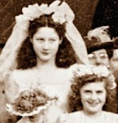
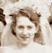
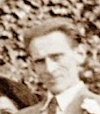
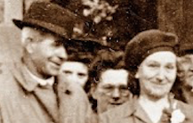
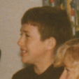
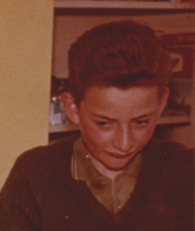

Hi all,
Can you help with identifying these people?
These are the bridesmaids in the wedding photo: I think the one on the right is Hazel Whalley isn't it? Or could it be Vera [Baines?]? Could the one on the left be Mum's friend Gert, who later took to calling herself Trudie? The young girl in the front looks very familiar to me. Do you recognise her?
Paul said the tall thin man on the right is Ronnie, but I don't think it is. I can't see Iris anywhere, she'd be there wouldn't she? Could it be uncle Frank? This is 1946, which would make Dad 28yo, Mum 26 and Ronnie about 21 or 22. I think this man looks older than that, don't you? Shout if you disagree. While I think of it, wasn't there a bit of discomfort between Mum and Iris because Mum was originally sweet on Jack? Or something like that...
And who the devil is the man standing next to Nan-nan - Do you think that might be Fa? Or could it be uncle Peter's dad? Did Mum used to have this photo? The more I look at it the more I keep getting déjà vu, especially about that man in the raincoat.
Have I got the names mixed up? Was it Vera Baines and Bill Baines, or was it Barry Baines, and there was Hazel Wally (is she the bridesmaid, not Vera?). Then there was auntie Edna - what was her surname - was her husband named Ted? Then there was Gert and ??? I keep thinking Gert and Daisy, but I might have got that from a radio show or something! The only other of Mum's friends I remember are auntie Merrier (Maria) (oh, my poor-a back-a) and a woman called Maisie that Mum knew from the rag trade I think. I probably made that up.
The two boys in these photos are Andrew and Terence Whalley aren't they?
June, do you think uncle Sid might have come down for the wedding? - the woman behind Mum looks a bit like I remember auntie Joyce.
Looking forward to your contributions folks - please reply to romit3@sky.com - you can see the photo here but I'll send the photo to everyone when you've responded to this.
Thanks, Rob